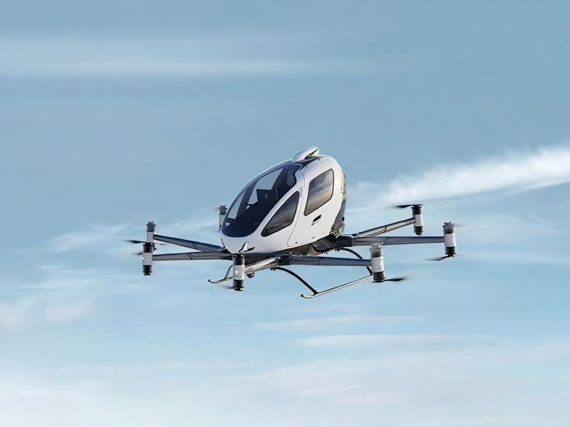
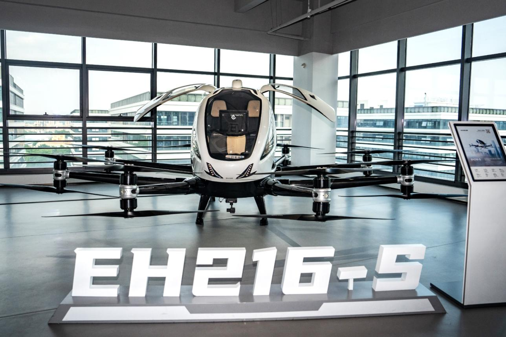

课程作业-2 · 某技术 / 产品全方位安全分析
本文承接作业一的 EH216-S 产品调研，按课程第五讲的系统安全工程方法，从被动安全、功能安全、预期功能安全（SOTIF）、行为安全、信息安全五个维度，结合整机—系统—硬件—软件—机械/电气/化学多层级，对其安全设计、危险源、冗余架构与开放问题进行深度分析。[1][3][5]
1. 安全定位：EH216-S 以“隔离空域 + 预设航线 + 无人驾驶 + 全备份冗余”为核心安全策略，用运行边界约束替代部分机载自主决策负担，这是它能率先完成载人适航取证的重要原因。
2. 已被验证的安全能力：三余度飞控投票、同轴双桨动力成对冗余、关键部件全备份、Fail-Safe 健康监测与就近应急降落、加密链路与地面调度介入，构成其基本安全架构；TC/AC/PC/OC 四证齐全说明设计、制造与运行达到现阶段审定可接受水平。
3. 仍待验证的安全风险：电池热失控与全寿命可靠性、复杂气象与感知边界、地面第三方坠撞风险、应急着陆场地、高密度混行交互与网络纵深防御，是从示范运行走向规模化通勤必须持续验证的开放问题。
4. 安全判断分层：“隔离空域示范运行安全可接受”已有证据支撑；“批量一致性与长时运行可靠性”需运营数据积累；“开放空域高密度载人通勤安全”尚未证明。
EH216-S 为 2 座、纯电、多旋翼、无人驾驶载人 eVTOL：8 轴 16 桨共轴双桨，12 组动力电池，三套独立飞控，机上无驾驶员与操纵装置，按预设航线在低空隔离空域自动飞行，由地面指挥调度中心远程监控与介入。[1][3]
| 边界项 | 界定 |
|---|---|
| 分析层级 | 整机级（Vehicle）→ 系统级（System）→ 硬件 / 软件 / 机械电气化学组件级（Component） |
| 安全对象 | 机上乘员、地面第三方（人员 / 财产）、航空器本体、地面站与数据链路 |
| 运行前提（ODD） | 低空隔离空域、预设点对点航线、良好气象、GNSS 可用、指定起降点 |
| 证据分级 | 官方设计披露 / CAAC 专用条件与审定公告 / 权威媒体核验 / 第三方研报口径，分别标注，不混用 |
| 不覆盖 | 不替代正式适航审定与安全论证；不给出未公开的内部可靠性数据；不评价未披露的具体 ASIL 等级 |
课程将智能运载工具安全划分为由内而外的五个维度；安全系统工程则沿“系统工程 → 安全分析 → 安全需求 → 安全措施 → 安全论证”链路展开。本文先按五层安全逐项剖析 EH216-S，再回到全生命周期流程审视。
碰撞 / 坠撞后保护乘员与地面人员
降低 E/E 故障导致的风险
降低性能局限与误用风险
与其他空域参与者交互安全
降低外部攻击与电磁风险
系统工程（INCOSE / ISO/IEC/IEEE 15288）→ 安全分析（CAE、HAZOP、HARA、FMEA、FTA、STPA、TARA）→ 安全需求（被动 / FuSa / SOTIF / 行为 / 信息安全）→ 安全措施（开发、实现、V&V）→ 安全论证（GSN、SACM）。[11]
安全分析必须先界定“在什么条件下安全”。EH216-S 当前运行设计条件与受限边界如下，超出 ODD 的行为不在其已验证安全包线内。
低空隔离空域；预设航线点对点；GNSS 定位可用；指定起降点；良好能见度与气象；2 名乘员；纯电短途（约 30 km / 25 min）；地面站远程监控与集群调度。
开放空域与高密度混行；雷雨、大风、低能见度、低 GNSS 信号环境；夜间或复杂城市峡谷环境；城际长航时；载人以外的高风险外挂任务；未审定的改装与非授权航线。

借鉴民航与自动驾驶的危害分析思路，从整机级辨识主要危险源，分析诱因、潜在后果、现有安全措施与残余风险关注点。风险等级为基于公开资料的定性判断，不替代正式 HARA。
| 危险源 / 失效场景 | 主要诱因 | 潜在后果 | 现有安全措施 | 残余风险关注 |
|---|---|---|---|---|
| 单电机 / 旋翼失效 | 电机故障、桨叶损伤 | 单侧推力损失、姿态偏移 | 同轴双桨成对冗余，另一电机提供该对全部推力；16 桨分布式布置 | 中 多桨同时失效的概率与控制律裕度 |
| 飞控计算机失效 | 硬件 / 软件故障 | 失控、姿态无法保持 | 三套独立飞控 + 投票机制，故障机剔除 | 低 投票逻辑与共因失效分析 |
| 传感器 / 定位不一致 | GNSS 失锁、传感器退化 | 航迹偏差、误判状态 | 多传感器备份与融合，飞控投票交叉校验 | 中 复杂环境感知与定位鲁棒性 |
| 电池单体失效 / 热失控 | 电芯老化、过充过放、碰撞损伤 | 起火、失电、坠机 | 12 组电池分组备份；智能电池系统监测；Fail-Safe 就近降落 | 高 热失控预警、阻燃与灭火、全寿命循环数据 |
| 通信链路中断 | 信号遮挡、干扰、链路故障 | 失联、地面无法介入 | 双重通信保障；独立密钥加密；中心实时监控与介入 | 中 链路降级策略与失联自主处置 |
| 与障碍物 / 其他航空器相撞 | 侵入空域、障碍物、误航迹 | 空中相撞、坠撞 | 预设隔离航线；调度中心集群管理；垂直起降点位规划 | 中 感知避障与开放空域冲突解脱 |
| 超出气象 / 环境能力 | 大风、雷雨、低能见度、湍流 | 姿态失控、迫降 | ODD 气象限制；健康状态监测；应急降落决策 | 中高 极限天气包线与 SOTIF 验证 |
| 网络入侵 / 电磁攻击 | 链路被劫持、伪造指令、电磁干扰 | 被操控、数据泄露、失控 | 独立密钥、加密数据链；调度中心统一管控 | 中 纵深防御、入侵检测与 EMC 验证 |
| 应急着陆无合适场地 | 城区 / 水面上方故障 | 坠地伤人、坠水 | Fail-Safe 智能判断续飞或就近降落；调度介入 | 中高 应急着陆区规划与地面第三方风险 |
| 地面人员误用 / 误操作 | 地面站操作失误、流程违规 | 错误起飞、航线错误 | 预设航线无人驾驶；流程与资质管理；中心复核 | 低 地面 HMI 与人员资质训练 |
功能安全关注电子电气（E/E）系统失效带来的风险：在足够短时间内探测危害事件，使系统回到安全状态，并把加功能后新增的风险降到可接受范围。[11]
三套独立飞控 + 投票机制，各配多传感器；单套故障时由投票剔除故障通道，剩余通道维持控制。类比 2oo3（三取二）表决架构思路。
8 轴 16 桨，每对同轴旋翼由两个不同电机驱动，构成成对故障冗余；单电机 / 桨失效时，同对另一旋翼补足推力，分布式布置降低单点失效影响。
12 组动力电池分组备份；关键传感器多套备份；故障时备份模块无缝接管，维持姿态与航迹控制。
内置 Fail-Safe 系统实时监测航空器健康状态，智能判断继续飞行或执行就近应急降落；地面调度中心在突发状况时介入施策。安全状态设计以“可控悬停 / 返航 / 就近着陆”为目标，而非单纯关机坠落。
功能安全解决“硬件 / 软件失效”，SOTIF 解决“没有失效但功能不足”的风险：感知能力、决策逻辑、性能边界与人为误用，在 ODD 边界附近可能产生危险。[11]
| SOTIF 风险项 | 在 EH216-S 上的表现 | 缓解 / 约束方式 | 待验证问题 |
|---|---|---|---|
| 感知与定位局限 | GNSS 遮挡、城市峡谷、传感器退化时状态感知精度下降 | 多传感器融合 + 飞控投票；限定开阔 / 隔离航线 | 弱 GNSS 与复杂地形下的定位鲁棒性 |
| 气象性能边界 | 大风、湍流、雷雨、低能见度超出飞行包线 | ODD 气象准入限制；健康监测；恶劣天气停飞 | 可放行气象阈值与边界工况测试覆盖度 |
| 决策与规划局限 | 非预期障碍、临时侵入、异常空域环境 | 预设航线 + 中心调度；隔离空域降低交互复杂度 | 开放场景下的感知—决策—避障能力 |
| 人为误用 | 地面站误操作、非授权改装、违规航线 | 无人驾驶去除飞行员操作环节；资质与流程管控 | 地面 HMI 防错、误用场景库与培训验证 |
SOTIF requires identifying hazards arising from performance limitation and misuse within and beyond the ODD, then correcting them through safety analysis and test data — not through redundancy alone.
行为安全关注与周围交通参与者（其他航空器、地面人员、障碍物）的交互假设与规则。EH216-S 当前通过隔离空域、预设航线与集中调度，把交互复杂度压到最低；这是现阶段行为风险可控的关键前提。
隔离空域内点对点飞行；统一航线与高度层；调度中心集群管理与时序安排；垂直起降点位固定；不与有人驾驶航线混行。
与直升机、无人机、其他 eVTOL 混行时的避障、协同规划、right-of-way 规则；非合作目标识别；异常行为预警与冲突解脱策略。

信息安全基于安全开发流程加入威胁分析与风险评估（TARA），抵御外部攻击对车辆 / 航空器平台的威胁。[11]
每架配独立密钥；数据链严加密；通信双重保障；指挥调度系统统一管控与预警；抵御恶意入侵。
全链路 TARA 与威胁建模；入侵检测与异常指令识别；密钥生命周期管理；固件 / 软件更新安全；电磁兼容（EMC）与抗干扰验证；地面站与后台系统防护。
碳纤维复合材料机身减重并承载；滑橇式起落架保障平稳起降；座舱为乘员提供包容空间。多旋翼载人 eVTOL 的纵向 / 侧向 / 垂向坠撞耐受结构、乘员约束与吸能设计仍是航空级被动安全的重点验证项。
纯电动力涉及高压电气与锂电池：需绝缘防护、短路 / 过充保护、高压互锁、故障检测；动力电池关注化学 / 热稳定性、热失控预警与控制、防火阻燃。电池是 eVTOL 最关键的化学安全风险源之一。

课程指出，汽车与无人机技术同源但体系不等价，载人航空必须按适航体系重构。下表把汽车安全标准、航空 / 航天标准与 EH216-S 对应环节对照。
| 环节 / 维度 | 汽车 / 自动驾驶标准 | 航空 / 航天标准 | EH216-S 对应与方法 |
|---|---|---|---|
| 系统开发流程 | ISO/IEC/IEEE 15288、ASPICE | SAE ARP4754A 民用飞机与系统开发 | 整机功能定义 → 系统架构 → 组件实现的正向开发 |
| 功能安全 | ISO 26262（FuSa） | SAE ARP4761、DO-254（硬件）、DO-178C（软件） | 三余度飞控投票、动力 / 传感 / 电池冗余；FMEA、FTA、FMEDA、CCA、PSSA/SSA |
| 预期功能安全 | ISO 21448（SOTIF） | 航空运行风险 / 场景审定 | ODD 界定、场景与边界测试、感知与决策局限识别 |
| 信息安全 | ISO/SAE 21434、UN R155 | 航空网络安全规范 | TARA 威胁分析、加密链路、密钥管理、入侵监测 |
| 系统安全工程 | MIL-STD-882E 思路 / STPA（SAE J3187） | NASA 系统安全手册、AS9100 | HARA、FHA、STPA、共因分析、安全需求分解 |
| 安全论证 | UL 4600 安全案例、GSN / SACM | 适航符合性证明 | 安全目标—各层安全需求—验证证据的推理链（适航三证 + OC） |
按课程给出的智能运载工具安全系统工程基本过程，从安全文化到运行安全论证共八个环节；V 模型左侧做定义与分析，右侧做测试验证。
组织、人员、流程、工具与生命周期质量管理
基于 ODC 的场景分析、整机使命与使用构想
HARA、FHA、STPA、FMEA、FTA、CCA、PSSA、SSA
冗余架构选型、安全机制与顶层安全需求分配
绝缘 / 短路 / 供电保护、故障检测、冗余诊断
智能系统逻辑、投票与降级、软件需求与 V&V
振动碰撞滚翻防护、IP 防护、电池热安全与阻燃
组件 / 系统 / 整机测试，运行安全论证与 GSN 安全案例
基于模型的功能定义 → 运行场景分析 → 整机危害分析与风险评估 → 整机安全概念与架构 → 系统 / 组件安全需求提取。
逻辑场景与性能边界 → 测试场景生成 → 组件测试 → 系统集成测试 → 整机集成与安全确认 → 运行安全论证。
隔离空域、预设航线下，三余度飞控、成对动力冗余、Fail-Safe 与调度介入构成基本安全屏障；四证齐全与累计架次运行支持现阶段示范载人的安全结论。
批量一致性、电池循环寿命与热安全、复杂气象适应、噪声与地面第三方影响，需要规模化运营与长期可靠性数据持续验证。
高密度混行冲突解脱、城市峡谷感知定位、应急着陆网、纵深网络安全与公众风险接受度，是走向城市立体交通前必须补齐的安全能力。
总体判断：EH216-S 的安全设计思路清晰——以运行边界约束 + 关键系统全备份 + 集中调度管控控制风险，在隔离空域示范场景下安全可行性已有审定与运行证据支撑；但距离开放空域、高密度、规模化载人通勤，仍需在电池安全、环境鲁棒性、交互行为与网络纵深防御上完成更多验证。